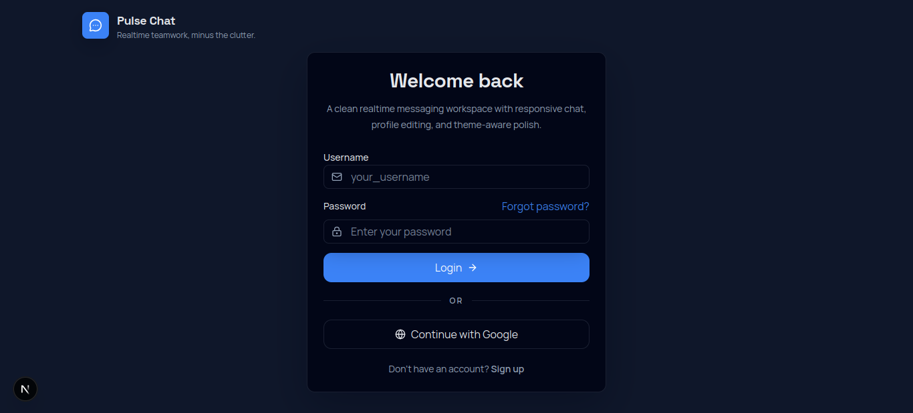
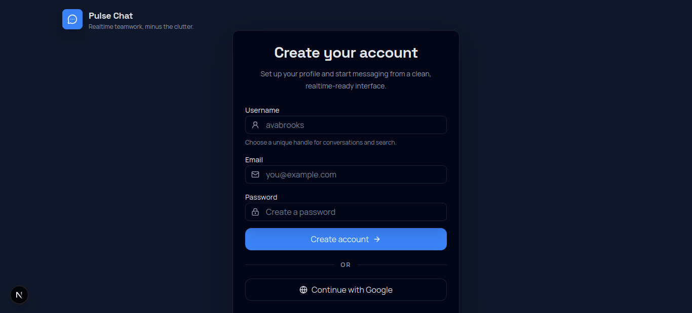
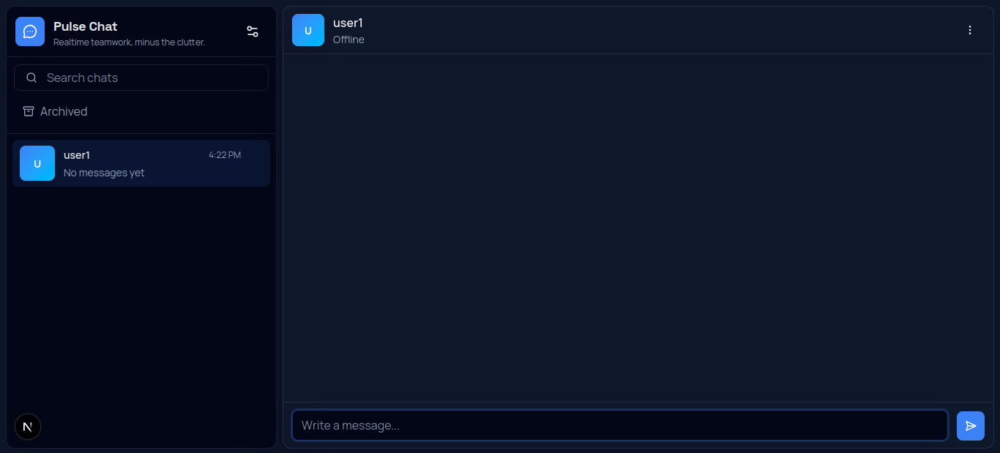
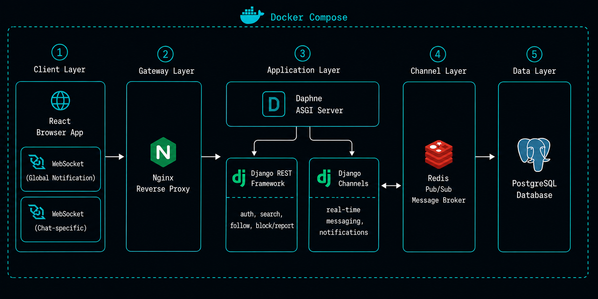

Overview
PulseChat is a production-grade real-time messaging platform built entirely from scratch as a solo project. Users can discover others through search, build connections via a follow-request system, and chat in real time once both sides are connected. The project covers the full spectrum — from authentication and user safety to WebSocket infrastructure and containerized deployment.
The Challenge
Most developers use APIs and HTTP requests — but real-time communication is a different beast entirely. The core motivation behind this project was to deeply understand how WebSockets work, how live data flows between a server and multiple clients simultaneously, and how production chat systems like Instagram or WhatsApp are architected under the hood.
The Solution
Rather than building something abstract, the goal was to recreate a familiar, real-world product — a chat app inspired by Instagram's messaging and follow model — and build it fully from scratch. This forced hands-on learning across the entire stack: designing a social graph, managing WebSocket connections with Django Channels and Redis, securing the app with JWT, OAuth, and 2FA, and finally containerizing everything with Docker and Nginx.
Interface Highlights



Core Capabilities
Real-Time Messaging
Instant WebSocket chat via Django Channels and Redis.
Multi-Layer Authentication
JWT, Google OAuth, and 2FA combined.
Social Connection Model
Chat only with mutually accepted follow requests.
Containerized Deployment
Dockerized stack with Nginx reverse proxy and Daphne.
Enterprise Ready
Designed for 99.99% uptime and global compliance standards.
System Architecture

Diagram 1.1: System architecture illustrating the request flow between React, Nginx, Daphne, Django Channels, Redis, and PostgreSQL across HTTP and WebSocket protocols.
Technologies Leveraged
Challenges & Solutions
Multi-Chat Notification Problem
When two users are actively chatting, any message sent by a third person goes unnoticed unless the recipient manually opens that conversation.
THE SOLUTION
Implemented two separate WebSocket connections — a global connection established when the user loads the app, dedicated to receiving real-time notifications from any user, and a chat-specific connection opened only when a conversation is active. This way, even mid-conversation, incoming messages from others surface instantly as notifications without interrupting the current chat.
Multiple Simultaneous WebSocket Connections
A user needed real-time notifications while actively chatting — requiring two WebSocket connections running simultaneously without conflicts.
THE SOLUTION
Built two React custom hooks — one for global notifications, one for active chat — keeping each connection's state and logic cleanly separated.
Deployment & Infrastructure
System Data Flow
Request Pipeline
WebSocket Logic
Database Pipeline
Specs & Security
Infrastructure Stack
- OSUbuntu 24.04 LTS
- RuntimeDocker 29.6
- ProxyNginx Stable
- LanguagePython 3.12
- ASGI ServerDaphne 4.2
- Channel Layer Redis 8.8
- DatabasePostgreSQL 18.4
Security Enforcement
Secrets Management
Environment variables via .env, never hardcoded.
Authentication
JWT, Google OAuth, and 2FA for multi-layer access control.
CORS Policy
Restricted to trusted origins during development.
Technical Lessons Learned
Real-Time Communication
Architecting dual WebSocket connections using Django Channels and Redis to separately handle live chat and global notifications.
Auth & Security
Combining JWT, Google OAuth, and TOTP-based 2FA into a unified authentication flow with environment-based secrets management.
Database Design
Modeling a social graph with follow requests, user relationships, and chat history using PostgreSQL with Django ORM.
Dockerization
Containerizing a multi-service stack — Django, Daphne, Redis, PostgreSQL, Nginx — using Docker Compose with persistent volumes.
API Design
Designing RESTful endpoints with Django REST Framework handling both standard HTTP and ASGI-compatible WebSocket routing via Daphne.
Frontend Architecture
Building modular React custom hooks to manage multiple simultaneous WebSocket connections with clean separation of concerns.
Explore the Source Code
The entire project is open-source. Contributions, bug reports, and requests are welcome via GitHub.